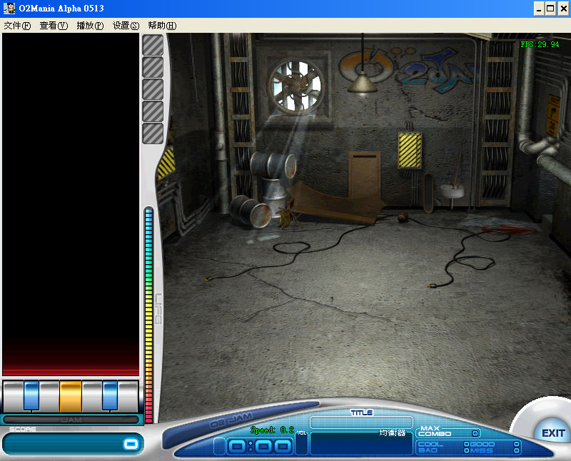
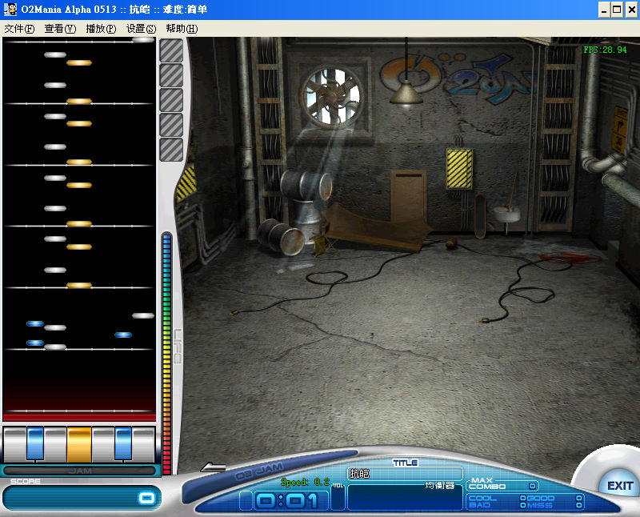

名稱：勁樂團單機模擬器 (O2mania，簡中版)
簡介：Fancy Zero 2005年製作的音樂節拍遊戲，主要目的是用來練習勁樂團的音樂。勁樂團
為O2Media於2003年出品的線上音樂遊戲，2004年由遊戲橘子繁中化並代理發行，2005
年由久游網簡中化並代理發行 [待補]。


備註：本版已內附444首音樂。
保護：無
備註：必須在簡中系統上執行，否則會亂碼。
操作：
SDF = 左三鍵
Space = 中央間
JKL = 右三鍵